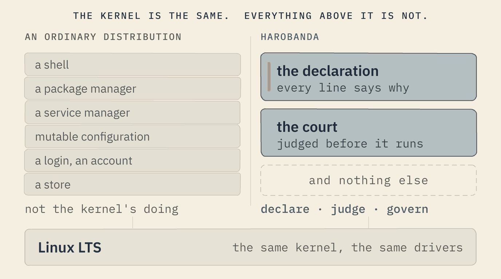
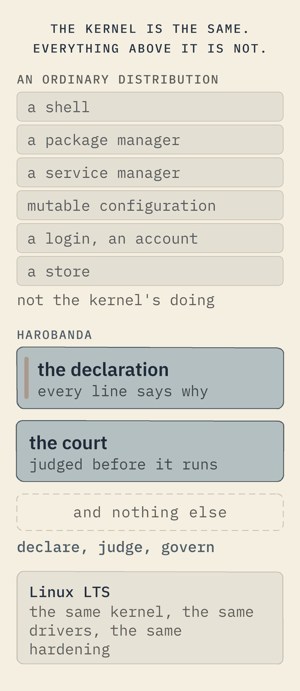

What it is
Not a new kernel. A new idea of an operating system.
Built on the Linux you already trust, a declared machine keeps four promises before any hardware is bought, judges its own boot, and is learnable in an evening. Here is how it works, and who it serves.
Not a new kernel
We didn't reinvent the wheel. We rethought the vehicle.


Underneath, Harobanda runs the same Linux LTS kernel as Ubuntu, Red Hat and nearly every distribution in production today — the same proven code, the same drivers, the same hardware support, the same decades of hardening. The kernel is not where the dogma lives, and it is not what we set out to replace.
What we rethought is everything the industry treats as inevitable above the kernel: that an operating system must carry a shell, a package manager, a service manager, mutable configuration, a login, an account, a store. None of that is the kernel's doing. It is convention — and convention is exactly where the ecosystem, and its costs, took hold.
So we deconstructed the dogma and rebuilt the operating system from first principles — the same method the wider Softanza project applies to every layer — keeping the one part that is genuinely hard and genuinely proven, and replacing the part that was only ever habit with a single idea: declare it, judge it, govern it.
For an IT team that is the reassuring part: no exotic kernel to certify, no unproven drivers, no new hardware-compatibility matrix. The substrate is the Linux you already trust; the discipline above it is what is new.